Demo visual · datos simulados
Plataforma institucional UTyPCB
Una muestra navegable de las áreas internas de una plataforma escolar: operación institucional, portal del alumno y administración.
UTyPCB organiza la operación de una universidad tecnológica en trece apps independientes: admisión, escolar, portal del alumno, comunidad, deportes, noticias, convocatorias, planes de estudio, transparencia, usuarios y permisos, entre otros. Cada una tiene sus propios modelos, vistas y pruebas, en vez de vivir como funciones sueltas dentro de una sola app monolítica.
El sistema separa la base de datos escolar (calificaciones, horarios, actas) de la base de datos del portal (cuentas, sesiones, contenido institucional), y añade auditoría, control de permisos granular por rol y generación de documentos oficiales — kardex, boletas, constancias — con folio verificable.
Trece apps, una sola base de código
Centro de control
Sesión demo · solo lectura+8.4% este ciclo
2 abiertas ahora
Revisión institucional
Actividad institucional
| Área | Actividad | Estado |
|---|---|---|
| Admisiones | Registro de aspirantes | Activo |
| Docencia | Cierre de actas | Revisión |
| Comunidad | Publicación de noticia | Listo |
Accesos rápidos
Hola, Alumno Demo
Ciclo actual
En curso
Mis accesos
Materias del ciclo
| Materia | Docente | Avance |
|---|---|---|
| Programación web | Docente Demo | 82% |
| Bases de datos | Docente Demo | 68% |
| Inglés técnico | Docente Demo | 91% |
Estado de cuenta simulado
Al corriente
Disponibles
Último recibo
Folio demo 000184
Áreas internas de la plataforma
Capturas de una demo navegable con datos ficticios para mostrar la amplitud funcional.
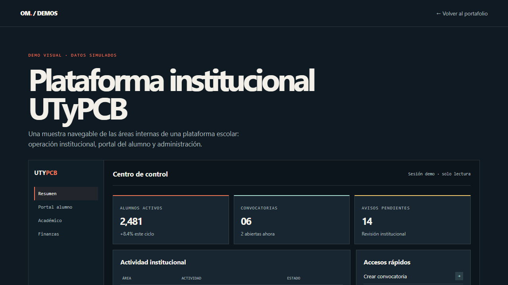
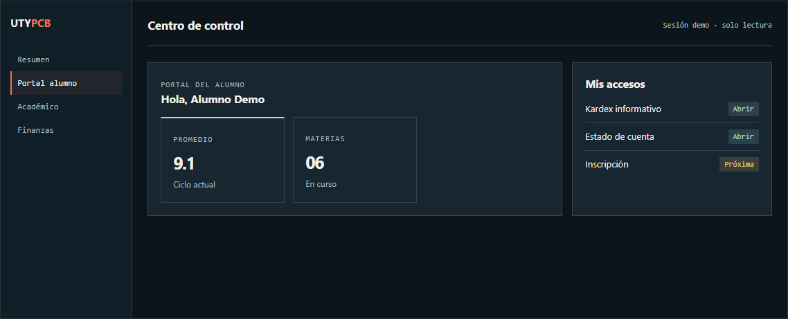
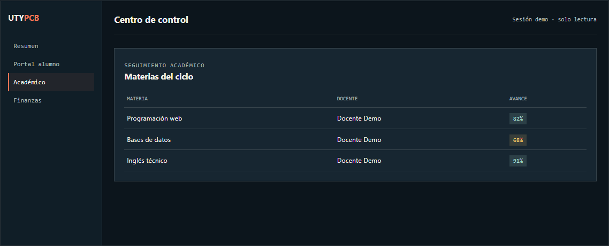
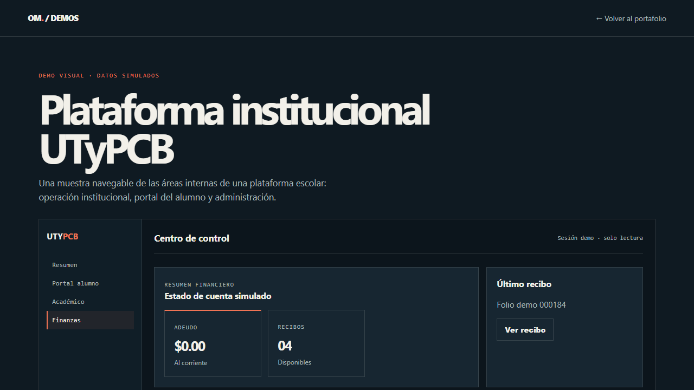
El sistema corriendo, no una maqueta
Capturas tomadas ejecutando Django en local con datos de prueba: portal del alumno, sitio público, administración y el panel del centro docente.
Portal del alumno en escritorio — inicio, calificaciones, horario y pagos:
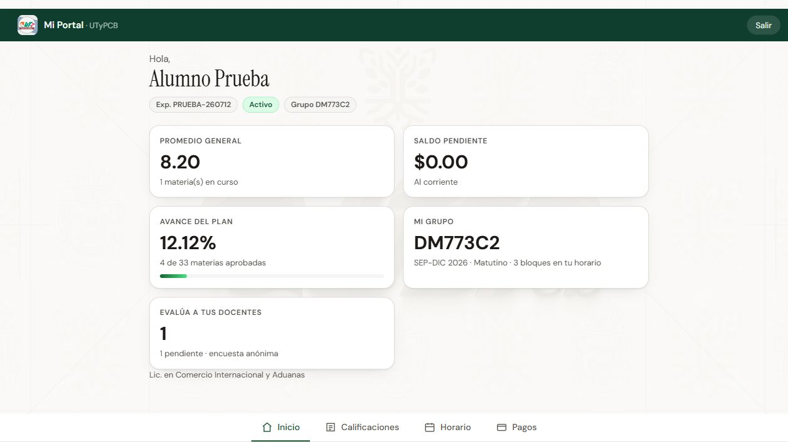
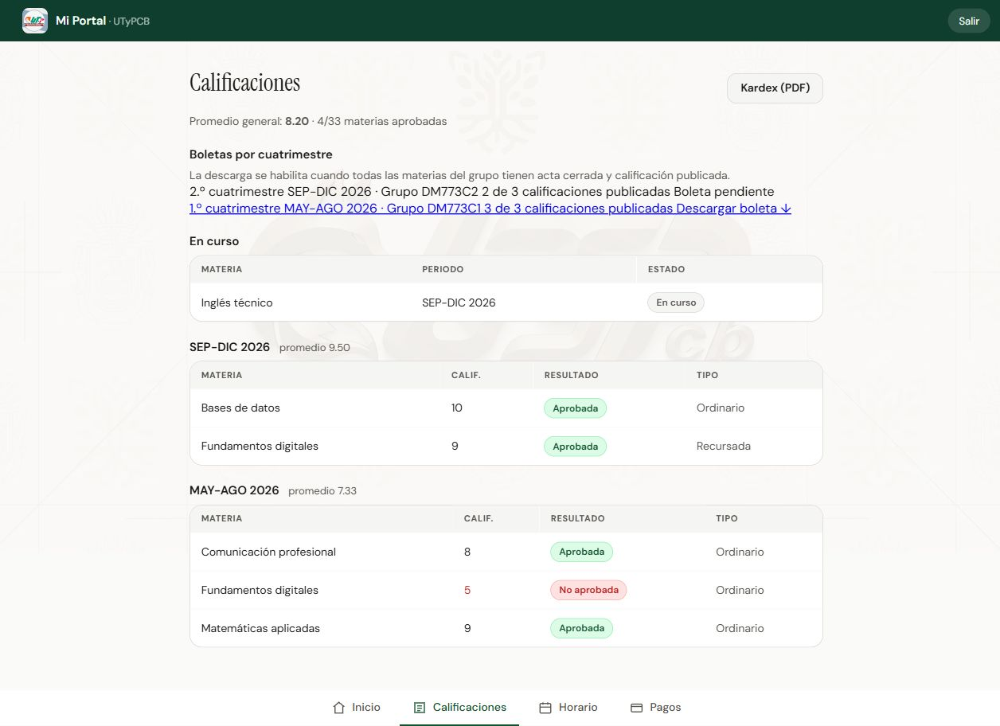
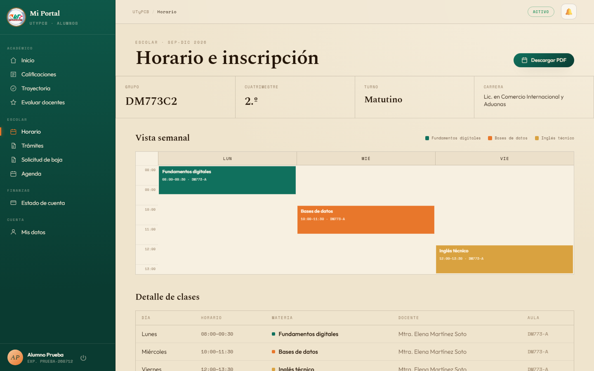
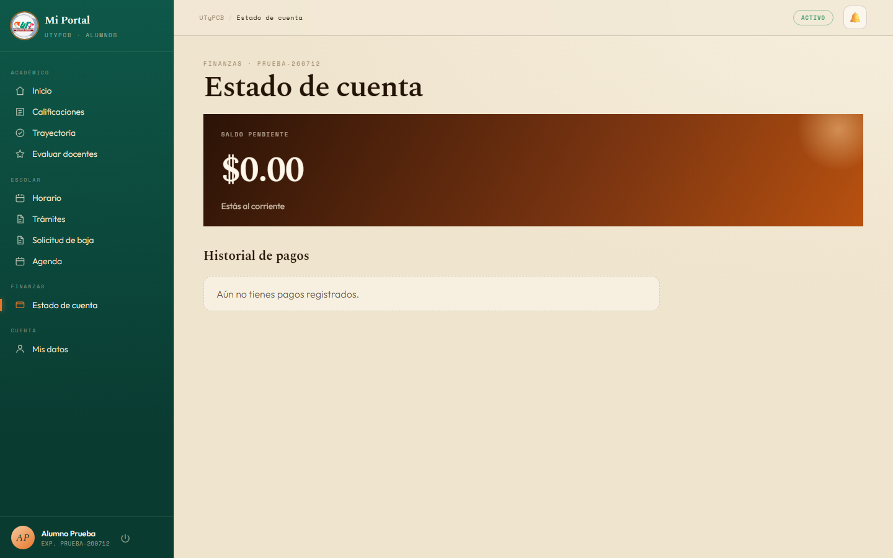
Portal del alumno en el celular:
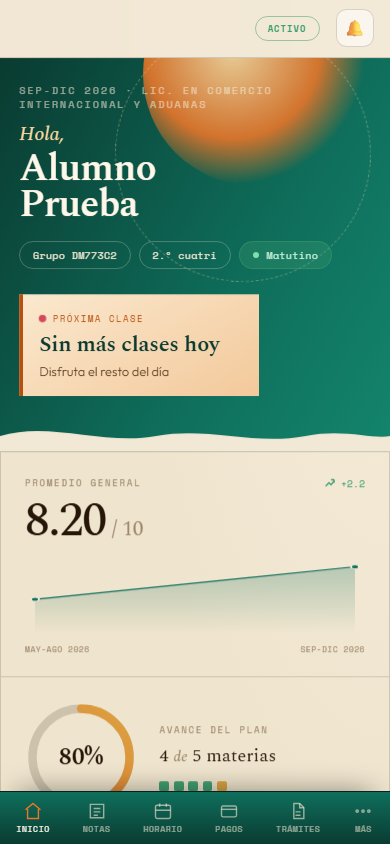
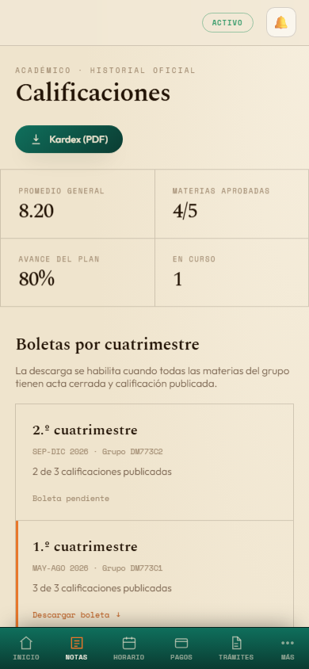
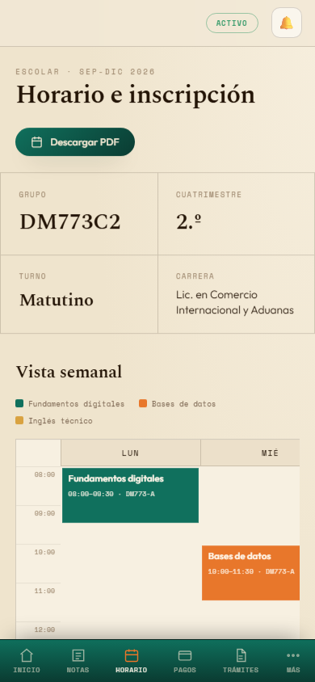
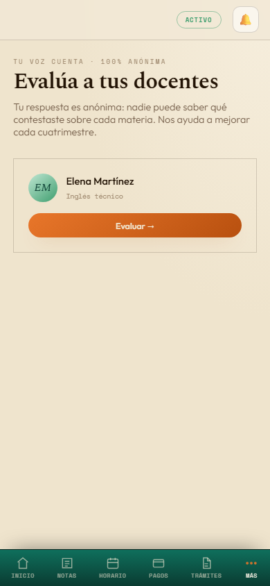
Sitio público, administración de Django y el panel del centro docente:
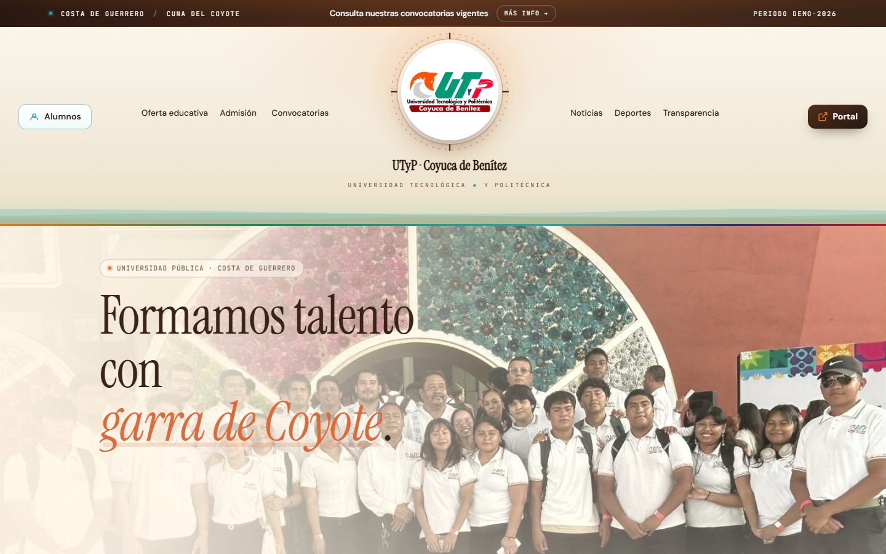
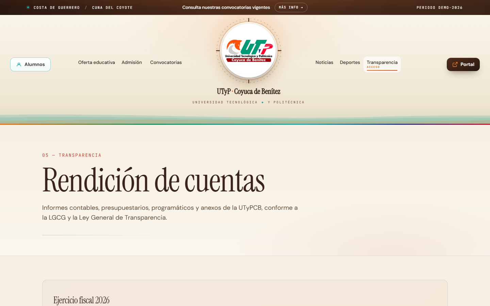
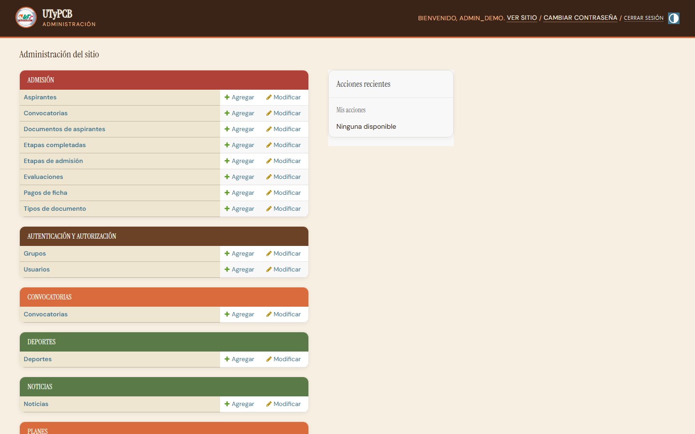
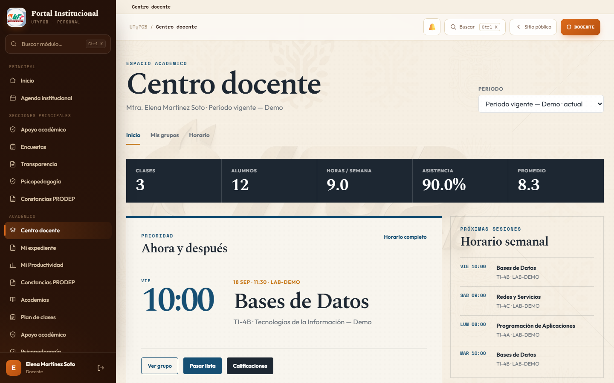